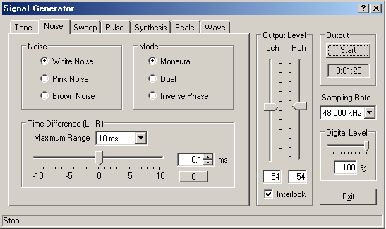
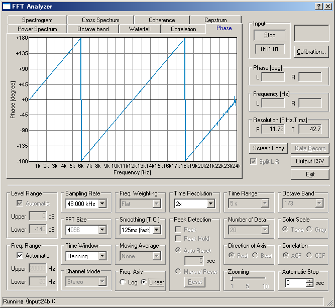

DSSF3 > RA > Reference Manual > Signal Generator

| Field | Item | Description |
|---|---|---|
| Noise | White Noise | White noise contains equal energy for all frequency. Its power spectrum is flat. |
| Pink Noise | Pink noise contains equal energy for all octave frequency. Energy decreases for high frequency. Its octave band spectrum is flat. | |
| Brown noise | Power spectrum of the brown noise decreases as the inverse square of its frequency (1 / f2). | |
| Mode | Monaural | Outputs the same signal for left and right channels. |
| Dual | Outputs a different signal for each channel. | |
| Inverse Phase | Outputs an inverse-phased signal for each channel. | |
| Time difference | Specify the time difference between two channels in the range between -10 and +10 ms. | |

DSSF3 > RA > Reference Manual > Signal Generator